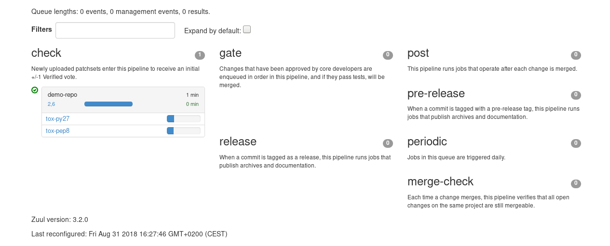

In this article, we will:
- provision a python project with a test suite based on tox
- explain how to use the zuul-jobs library in order to benefit from jobs maintained by the Zuul community.
This article is part of the Zuul hands-on series.
Note that most of the links reference sftests.com which is the default domain of the sandbox documented in the How to setup a Software Factory sandbox blog post. Make sure to adapt the links if necessary.
The examples and commands are intended to be run on a Software Factory sandbox where a demo-repo repository exists. You should have such an environment after following the previous articles in this series:
- To deploy a Software Factory sandbox please read the first article of the series.
- To create the demo-repo repository, please follow the sections Clone the config repository and Define the demo-repo repository sections.
If you have already deployed a Software Factory sandbox and created a snapshot as suggested, you can restore this snapshot to follow this article on a clean environment. In that case make sure the system date of your virtual machine is correct post restoration. If not fix it by running
systemctl stop ntpd; ntpd -gq; systemctl start ntpd
The Zuul Jobs Library
By design Zuul promotes reusability in its approach to jobs. In that spirit, a public jobs library is available at git.zuul-ci.org.
The library contains jobs that can be used directly as is, and more elementary roles that can be included into your own playbooks.
As of now the zuul-jobs library covers mainly typical CI or CD needs for Python and Javascript projects, for example:
- publishing a package to PyPI
- tox tests
- npm commands
- documentation building with Sphinx
Zuul however can support CI and CD for any language, and the library is a good source of examples to start from when writing your own jobs. And if your jobs are generic enough, do not hesitate to contribute upstream to enrich the library.
Provision the demo-repo source code
Clone demo-repo and provision it with this demo code .
git clone -c http.sslVerify=false https://sftests.com/r/demo-repo
cd demo-repo
git review -s # Enter admin as username
tar -xzf /tmp/hoz-4-demo-repo.tgz -C .
This will add a tox ini file to the repository, so unittests can be started by running tox (obviously, make sure you have tox installed on your system first).
tox
If you went through the third article of the series to the end, remove also the previous jobs and pipelines definitions, and the now useless hello.py file:
git rm -r playbooks .zuul.yaml hello.py
Push the code to the demo-repo repository. Note that we don't use git review here to bypass the review process of Gerrit. We will reconfigure the CI later.
git add -A
git commit -m"Initialize demo-repo project"
git push gerrit
Use zuul-jobs tox jobs
Software Factory bundles a copy of the upstream zuul-jobs library. You can browse zuul-jobs's source code (sftests.com) and its documentation (sftests.com).
As the demo-repo source code comes with a tox file we can benefit from the tox-py27 and tox-pep8 jobs defined in zuul-jobs.
In demo-repo, create the file .zuul.yaml:
- project:
check:
jobs:
- tox-py27
- tox-pep8
gate:
jobs:
- tox-py27
- tox-pep8
Then submit the change on Gerrit:
git add .zuul.yaml
git commit -m"Init demo-repo pipelines"
git review
Both jobs will be started in parallel by Zuul, as can be seen in the status (sftests.com) page.
When the jobs are completed, the produced artifacts will be stored on the log server as usual. Along with the expected console log, inventory file and ARA report, you will also find the logs of the execution stages of tox in the tox directory.
This concludes this article on how to use the zuul jobs library with your projects.
To use the upstream version of the Zuul jobs library instead of the one embedded in Software Factory, you can do so by following the steps described in this configuration section (sftests.com).
Stay tuned for the next article.